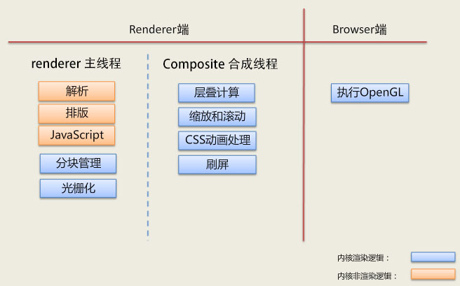

Performance是一个做前端性能监控离不开的API，最好在页面完全加载完成之后再使用，因为很多值必须在页面完全加载之后才能得到。最简单的办法是在window.onload事件中读取各种数据。
# 一、回顾页面加载过程
要学习这套
API的使用，先简单介绍下前端的基础知识
# 1.1 页面加载
一个页面的请求到响应再到显示出来，需要经过下面一些重要过程，当我们在浏览器输入一个
URL或者说点击一个URL开始，会出现如下流程
- 页面准备
- 重定向：在
header定义了重定向才会有这个过程，如果没有重定向，不会产生这个过程。 app cache：会先检查这个域名是否有缓存，如果有缓存就不需要DNS解析域名。这里的app是值应用程序application，不指手机app。DNS解析：把域名解析成IP，如果直接用ip地址访问，不产生这个过程。TCP连接：http协议是经过TCP来传输的，所以产生一个http请求就会有TCP connect，但是依赖于长连接，不会产生这个过程。request header：请求头信息。request body：请求体信息，比如get请求是没有请求体信息的，所以没有这个过程，这就是为什么把头跟体分开写的原因。response header：响应头信息。response body：响应体信息。- 解析
HTML结构 - 加载外部脚本和样式表文件：正常来说
JS、css都是外部加载的，当然有不正常的人啊，比如我。 - 解析并执行脚本代码
- 构建与解析
HTML DOM树：这个过程可以去了解下DOM树是怎样的就明白啦。 - 加载外部图片
- 页面加载完成，显示出来啦
# 1.2 重定向分析
app cachDNS解析TCP连接request header- 重定向
app cachDNS解析TCP连接request header
# 二、performance
# 2.1 performance.timing
这个API能帮我们得到整个页面请求的时间，如下图，在
Chrome的Console是可以直接运行的
先解释下这些时间都是代表什么
timing 对象里边的数据比较多，梳理如下几个关键性的节点
fetchStart：发起获取当前文档的时间点，我的理解是浏览器收到发起页面请求的时间点；domainLookupStart：返回浏览器开始DNS查询的时间，如果此请求没有DNS查询过程，如长连接、资源cache、甚至是本地资源等，那么就返回fetchStart的值；domainLookupEnd：返回浏览器结束DNS查询的时间，如果没有DNS查询过程，同上；connectStart：浏览器向服务器请求文档，开始建立连接的时间，如果此连接是一个长连接，或者无需与服务器连接（命中缓存），则返回domainLookupEnd的值；connectEnd：浏览器向服务器请求文档，建立连接成功的时间；requestStart：开始请求文档的时间（注意没有requestEnd）;responseStart：浏览器开始接收第一个字节数据的时间，数据可能来自于服务器、缓存、或本地资源；unloadEventStart：卸载上一个文档开始的时间；unloadEventEnd：卸载上一个文档结束的时间；domLoading：浏览器把document.readyState设置为“loading”的时间点，开始构建dom树的时间点；responseEnd：浏览器接收最后一个字节数据的时间，或连接被关闭的时间；domInteractive：浏览器把document.readyState设置为“interactive”的时间点，DOM树创建结束；domContentLoadedEventStart：文档发生DOMContentLoaded事件的时间；domContentLoadedEventEnd：文档的DOMContentLoaded事件结束的时间；domComplete：浏览器把document.readyState设置为“complete”的时间点；loadEventStart：文档触发load事件的时间；loadEventEnd：文档出发load事件结束后的时间
再来一张图，表示各阶段的开始与结束对应的时间

从以上的分析，我们就可以得到一些时间的计算
- 准备新页面耗时：
fetchStart - navigationStart - 重定向时间：
redirectEnd - redirectStart App Cache时间：domainLookupStart - fetchStartDNS解析时间：domainLookupEnd -domainLookupStartTCP连接时间：connectEnd - connectStartrequest时间：responseEnd - requestStart这个计算是代表请求响应加起来的时间- 请求完毕到
DOM树加载：domInteractive -responseEnd - 构建与解析
DOM树，加载资源时间：domCompleter -domInteractive load时间：loadEventEnd - loadEventStart- 整个页面加载时间：
loadEventEnd -navigationStart - 白屏时间：
responseStart-navigationStart
# 2.2 performance.getEntries()
这个API能帮我们获得资源的请求时间，包括JS、CSS、图片等
如上图可以看到这个API请求返回的是一个数组，这个数组包括整个页面所有的资源加载，上图打开了一个其中一个资源，可以看到如下信息
entryType：类型为resourcename：资源的urlinitiatorType：资源是link- 资源时间：
duration的值，是responseEnd - startTime得到的
# 2.3 performance.memory
这个API主要是得到浏览器内存情况
jsHeapSizeLimit：内存大小限制totalJSHeapSize：可使用的内容userdJSHeapSize：已使用的内容
userdJSHeapSize表示所有被使用的JS堆栈内存，totalJSHeapSize可使用的JS堆栈内存，如果userdJSHeapSize的值大于totalJSHeapSize，就可能出现内存泄漏
# 三、动画帧率FPS
# 3.1 流畅动画的标准
FPS表示的是每秒钟画面更新次数。我们平时所看到的连续画面都是由一幅幅静止画面组成的，每幅画面称为一帧，FPS是描述“帧”变化速度的物理量
- 理论上说，
FPS越高，动画会越流畅，目前大多数设备的屏幕刷新率为60次/秒，所以通常来讲FPS为60 frame/s时动画效果最好，也就是每帧的消耗时间为16.67ms
不同帧率的体验
- 帧率能够达到
50 ～ 60 FPS的动画将会相当流畅，让人倍感舒适； - 帧率在
30 ～ 50 FPS之间的动画，因各人敏感程度不同，舒适度因人而异； - 帧率在
30 FPS以下的动画，让人感觉到明显的卡顿和不适感； - 帧率波动很大的动画，亦会使人感觉到卡顿
# 3.2 获取我们页面动画当前的 FPS 值
那么我们该如何准确的获取我们页面动画当前的 FPS 值呢？
# 3.2.1 方法一 借助 Chrome 开发者工具
Chrome提供给开发者的功能十分强大，在开发者工具中，我们进行如下选择调出FPS meter选项：

通过这个按钮，可以开启页面实时
Frame Rate(帧率) 观测及页面GPU使用率
但是这个方法缺点太多了
- 这个只能一次观测一到几个页面，而且需要人工实时观测
- 数据只能是主观感受，并没有一个十分精确的数据不断上报或者被收集
- 因此，我们需要更加智能的方法。
# 3.2.2 方法二 借助 Frame Timing API
Blink 内核早期架构
- 以
Chrome浏览器内核Blink渲染页面为例。对早期的Chrome浏览器而言，每个页面Tab对应一个独立的renderer进程，Renderer进程中包含了主线程和合成线程。早期Chrome内核架构

其中，主线程主要负责：
Javascript的计算与执行CSS样式计算Layout计算- 将页面元素绘制成位图（
paint），也就是光栅化（Raster） - 将位图给合成线程
合成线程则主要负责：
- 将位图(
GraphicsLayer层)以纹理(texture)的形式上传给GPU - 计算页面的可见部分和即将可见部分（滚动）
CSS动画处理- 通知 GPU 绘制位图到屏幕上
其实知道了这两个线程之后，下一个概念是厘清
CSS动画与JS动画的细微区别（当然它们都是 Web 动画）
JS 动画与 CSS 动画的细微区别
- 对于
JS动画而言，它们运行时的帧率即是主线程和合成线程加起来消耗的时间。对于流畅动画而言，我们希望它们每一帧的耗时保持在16.67ms之内; - 而对于
CSS动画而言，由于其流程不受主线程的影响，所以希望能得到合成线程的消耗的时间，而合成线程的绘制频率也反映了滚动和 CSS 动画的流程性。
上面主要想得出的一个结论是。如果我们能够知道主线程和合成线程每一帧消耗的时间，那么我们就能大致得出对应的 Web 动画的帧率。那么上面说到的
Frame Timing API是否可以帮助我们拿到这个时间点呢
什么是 Frame Timing API ？
Frame Timing API是Web Performance Timing API标准中的其中一位成员。Web Performance Timing API是 W3C 推出的一套性能 API 标准，用于帮助开发者对网站各方面的性能进行精确的分析与控制，提升 Web 网站性能
它包含许多子类 API，完成不同的功能，大致如下

怎么使用呢？以 Navigation Timing, Performance Timeline, Resource Timing 为例子，对于兼容它的浏览器，它以只读属性的形式对外暴露挂载在 window.performance 上。
我们再来回顾这张图
通过这张图以及上面的
window.performance.timing，我们就可以轻松的统计出页面每个重要节点的耗时，这就是Web Performance Timing API的强大之处，感兴趣的可以详细去研究研究，使用在页面统计上
Frame Timing API 示意
终于可以回归正题，借助
Web Performance Timing API中的Frame Timing API，可以轻松的拿到每一帧中，主线程以及合成线程的时间。或者更加容易，直接拿到每一帧的耗时
获取 Render 主线程和合成线程的记录，每条记录包含的信息基本如下
var rendererEvents = window.performance.getEntriesByType("renderer");
var compositeThreadEvents = window.performance.getEntriesByType("composite");
或者是：
ar observer = new PerformanceObserver(function(list) {
var perfEntries = list.getEntries();
for (var i = 0; i < perfEntries.length; i++) {
console.log("frame: ", perfEntries[i]);
}
});
// subscribe to Frame Timing
observer.observe({entryTypes: ['frame']});
每条记录包含的信息基本如下：
{
sourceFrameNumber: 120,
startTime: 1342.549374253
cpuTime: 6.454313323
}
每个记录都包括唯一的
Frame Number、Frame开始时间以及cpuTime时间。通过计算每一条记录的startTime，我们就可以算出每两帧间的间隔，从而得到动画的帧率是否能够达到60 FPS
看看 Web Performance Timing API 整体的兼容性

Frame Timing API虽好，但是，现在Frame Timing API的兼容性不算很友好，额，不友好到什么程度呢。还没有任何浏览器支持，处于实验性阶段，属于面向未来编程
# 3.2.3 方法三 借助 requestAnimationFrame API
从上面的介绍，我们得知，如果我们可以到得到每一帧中的固定一个时间点，那么两者相减，也能够近似得到一帧所消耗的时间
这次，我们借助兼容性不错的 requestAnimationFrame API
// 语法
window.requestAnimationFrame(callback);
requestAnimationFrame大家应该都不陌生，方法告诉浏览器您希望执行动画并请求浏览器调用指定的函数在下一次重绘之前更新动画。- 当你准备好更新屏幕画面时你就应用此方法。这会要求你的动画函数在浏览器下次重绘前执行。回调的次数常是每秒
60次，大多数浏览器通常匹配W3C所建议的刷新率
使用 requestAnimationFrame 计算 FPS 原理
原理是，正常而言
requestAnimationFrame这个方法在一秒内会执行60次，也就是不掉帧的情况下。假设动画在时间A开始执行，在时间B结束，耗时x ms。而中间requestAnimationFrame一共执行了n次，则此段动画的帧率大致为：n / (B - A)
核心代码如下，能近似计算每秒页面帧率，以及我们额外记录一个 allFrameCount，用于记录 rAF 的执行次数，用于计算每次动画的帧率 ：
var rAF = function () {
return (
window.requestAnimationFrame ||
window.webkitRequestAnimationFrame ||
function (callback) {
window.setTimeout(callback, 1000 / 60);
}
);
}();
var frame = 0;
var allFrameCount = 0;
var lastTime = Date.now();
var lastFameTime = Date.now();
var loop = function () {
var now = Date.now();
var fs = (now - lastFameTime);
var fps = Math.round(1000 / fs);
lastFameTime = now;
// 不置 0，在动画的开头及结尾记录此值的差值算出 FPS
allFrameCount++;
frame++;
if (now > 1000 + lastTime) {
var fps = Math.round((frame * 1000) / (now - lastTime));
console.log(`${new Date()} 1S内 FPS：`, fps);
frame = 0;
lastTime = now;
};
rAF(loop);
}
loop();
寻找一个有动画不断运行的页面进行测试，可以看到代码运行如下：

- 使用了我之前制作的一个页面进行了测试，使用
Chrome同时调出页面的FPS meter，对比两边的实时FPS值，基本吻合。 - 测试页面，
Solar System。你可以将上面的代码贴到这个页面的console中，测试一下数据

- 对比右上角的
Frame Rate，帧率基本一致。在大部分情况下，这种方法可以很好的得出 Web 动画的帧率。 - 如果我们需要统计某个特定动画过程的帧率，只需要在动画开始和结尾两处分别记录
allFrameCount这个数值大小，再除以中间消耗的时间，也可以得出特定动画过程的FPS值。 - 值得注意的是，这个方法计算的结果和真实的帧率肯定是存在误差的，因为它是将每两次主线程执行
javascript的时间间隔当成一帧，而非上面说的主线程加合成线程所消耗的时间为一帧。但是对于现阶段而言，算是一种可取的方法